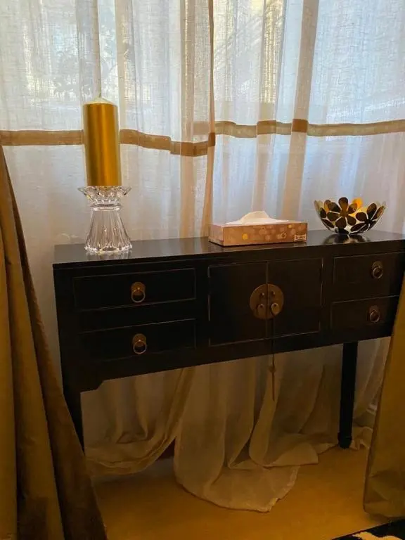

Experience Luxury Living in Turin
An architectural sanctuary for the modern connoisseur.
Curated Residence
The appartment is a dialogue between Piedmontese heritage and contemporary design.



Refined Amenities for the Modern Traveler
We offer more than a place; we provide a curated environment designed for both productivity and repose.
Coffe in Appartment
The refined pleasure of a perfect pour, curated for your private awakening.


Modern Kitchen
Fully equipped with top-tier appliances and culinary essentials for a delightful cooking experience.
"A very cozy apartment, tastefully furnished, clean, and comfortable. Plenty of space for four people. The owner provided all the necessary instructions for check-in and responded promptly to our requests. The apartment is located near the central station, just a short walk from downtown."
In the Heart of the Quadrilatero
Nestled between the Egyptian Museum and the Royal Palace, our appartment offers the most prestigious address in the city. Experience the rhythmic pulse of Turin from a quiet, cobblestoned sanctuary.
Egyptian Museum
10-minute walk
Mole Antonelliana
12-minute walk

Via Paolo Sacchi, 36
The Appartment Lens
#TURINATELIERLUX